Four days in Reykjavik for her fiftieth.
Natasha is turning fifty. You're taking her to Iceland with three couples from London and Madrid — people she's known for years, in rooms she's never been in before. The brief is simple. Not luxury in the way that word gets thrown around at travel agents. Quality without friction. Hot springs, real food, a landscape that does most of the work, and time to sit at dinner for four hours because the conversation is good.
Iceland in April is the right answer for that. It is cold, it is windy, the weather changes inside an hour, and the light is long and getting longer. The Reykjavik Edition is where you sleep and where the bags live. Everything else happens off-property — in a 1924 saltfish factory, in a tomato greenhouse heated by the earth, in a fjord where eight natural hot pools run into the North Atlantic. The hotel is American hospitality in a foreign country. The trip is the foreign country.
Four days, three nights, three dinners, two mornings in hot water, one full day driving into the rift between continents. Built for people who have seen most things and still want to be surprised.
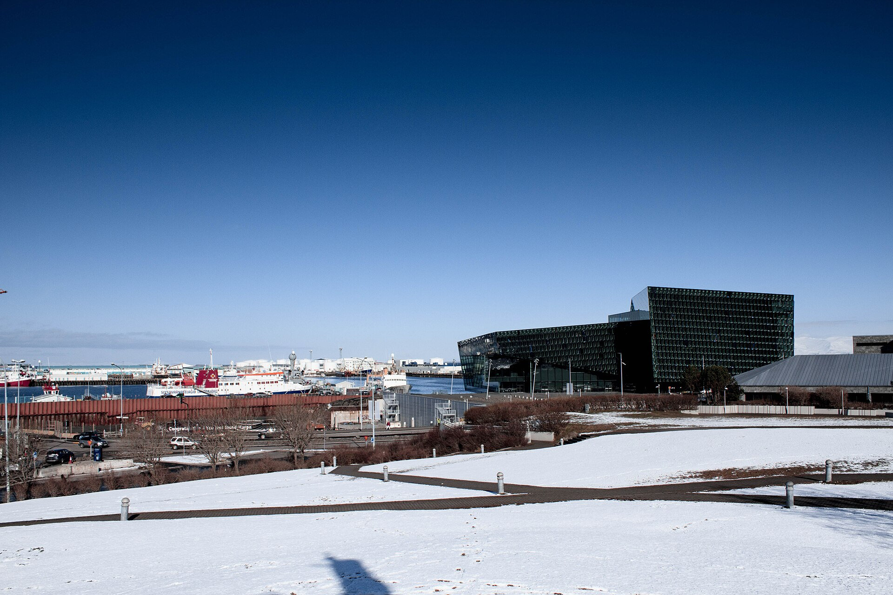
A private minibus from Hidden Iceland meets the group at arrivals. Forty-five minutes through a lava field to the harbourside downtown. Bags to the Edition. Early check-in is arranged in advance — the rooms will be ready. For anyone who wants coffee before the water, Reykjavik Roasters on Kárastígur is five minutes from the hotel.
Fifteen minutes from the hotel, on the Kópavogur peninsula, an infinity-edge geothermal pool sits directly over the North Atlantic. The Skjól ritual is seven steps — pool, cold plunge, sauna, cold mist, body scrub, steam, pool — and it is the fastest way to undo a red-eye that exists. Private Sér changing for the group. Three hours. No phones.
Back to the Edition. Proper check-in, naps, showers, whatever the body needs. This afternoon is deliberate — day one on no sleep is a bad opening, and the rest of the weekend is better for leaving it quiet.
Reykjavik on foot. Harpa Concert Hall, whose basalt-glass façade was designed by Olafur Eliasson and which Natasha will recognise the moment she sees it. The old harbour. Up Laugavegur. No agenda. A glass of wine somewhere if a window calls.
Laugavegur 28. Middle Eastern and Mediterranean cooking built around Icelandic ingredients — one of the most loved restaurants in Reykjavik, and the one that hums on a Thursday night. Open seating in the main room, not a private corner. This group wants to be inside the city, not sealed off from it. Sharing plates, big wines, warm noise.
Hidden Iceland has sent the restaurant a note about the birthday weekend and the group will be looked after. The staff will have two or three bar recommendations ready when dinner winds down — Kaffibarinn, Pablo Discobar, Kaldi, Tölt downstairs at the hotel. Whoever still has the energy picks the night.
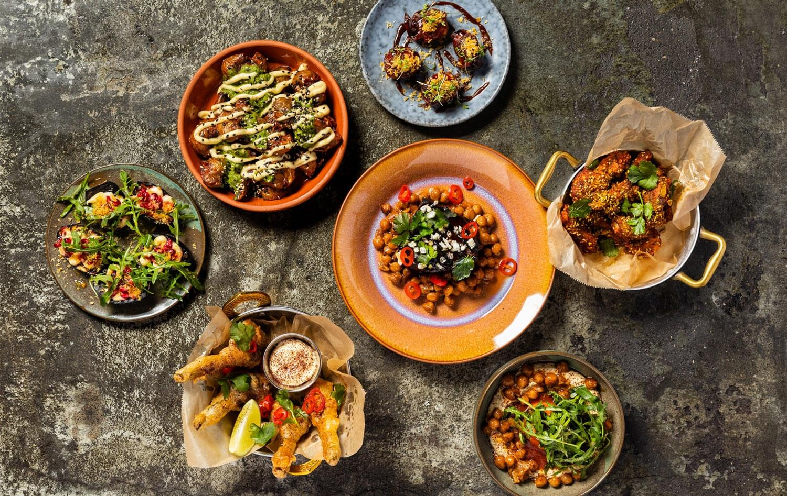
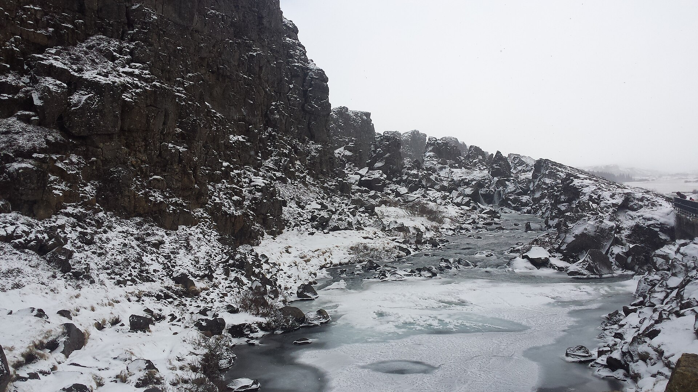
Private luxury minibus with a senior guide from Hidden Iceland. One of the founders — or their most experienced private guide — will be with the group for the day.
The North American and Eurasian tectonic plates diverge by about two centimetres a year, and the seam runs straight through the Þingvellir rift valley. The Icelandic parliament first met here in 930 AD, in the open air, at Almannagjá. The walk down the rift takes forty minutes. The Öxarárfoss waterfall is at the end of it.
At Silfra, a fissure in the same rift fills with glacial meltwater so clear you can see a hundred metres through it. The water is two degrees, the dry suits do the work, and the guides from DIVE.IS have run thousands of these. Two and a half hours including briefing and changing. This is the part of the trip some of the group will remember forever and the rest will politely pass on. Anyone who stays dry has the rest of the park — the lake, the old church, the coin gorge.
The geothermal field at Geysir is where the word geyser entered the English language. The original Great Geysir is dormant these days. Strokkur, next to it, erupts every five to ten minutes, twenty metres straight up, on a schedule you can almost set a watch to. Half an hour is plenty.
The Hvítá river drops in two tiers into a narrow canyon. In April there is still ice at the edges. Both viewing platforms are worth the walk.
Reykholt. A working tomato greenhouse heated entirely by geothermal water, growing tomatoes year-round under glass on a farm where winter outside is four months of darkness. Lunch is served inside the greenhouse, at tables set among the plants — tomato soup refilled from a silver pot, bread baked that morning, and a cocktail program built entirely from tomatoes. Bloody marys, tomato schnapps, tomato beer. Nobody expects any of it. That is part of why it works.
A twenty-minute stop on the route back. A volcanic crater fifty-five metres deep with a turquoise lake at the bottom. The rim walk takes fifteen minutes. The birthday group photograph happens here, because the light in April is already long and this is the best frame on the Golden Circle.
Rest, change, reset.
Laugavegur 59. The only Michelin-starred restaurant on the island, run by Gunnar Karl Gíslason — a chef who has spent twenty years reading the Icelandic landscape through foraging, fermentation, and seasonality. Tasting menu with wine pairing. Small room. This is the serious dinner of the three, where the food does the talking.
After, if the night wants to keep going: the rooftop at Petersen Svítan, or live music at Dillon.
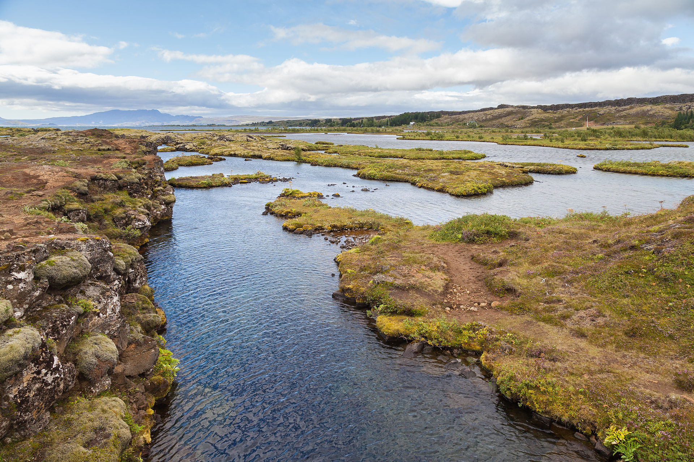
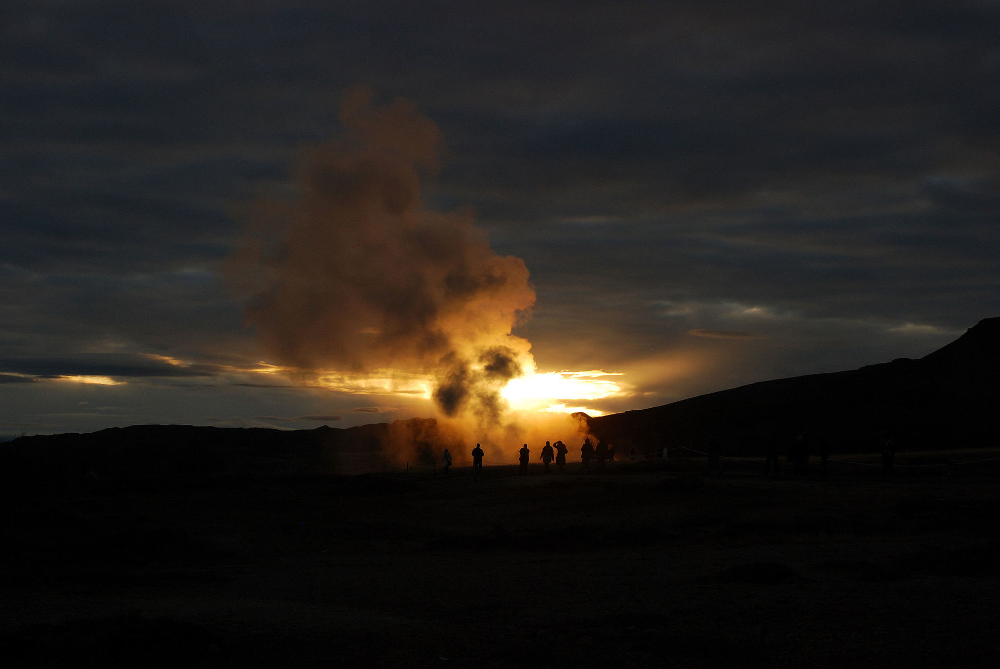
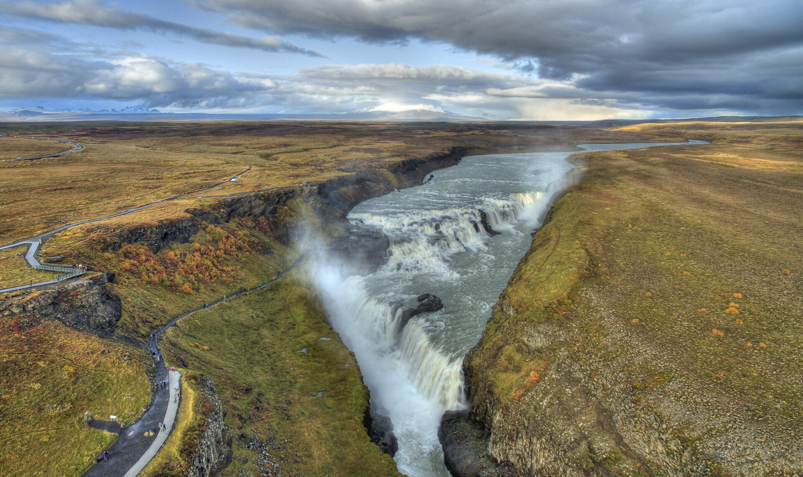
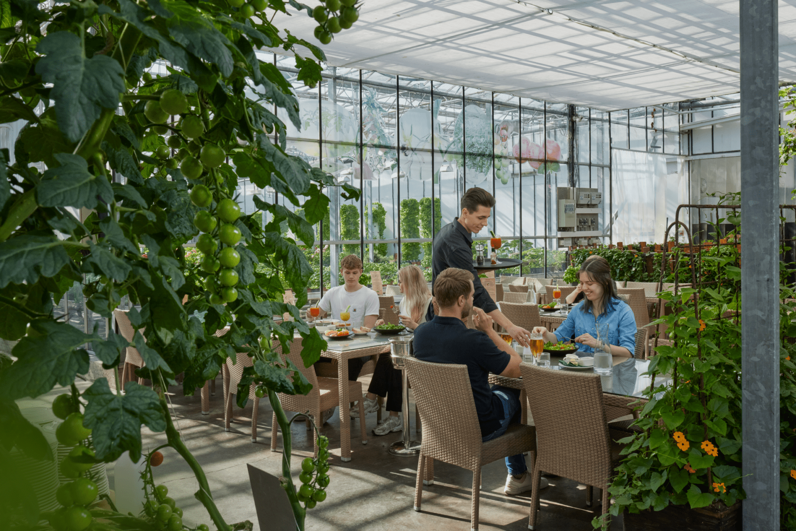
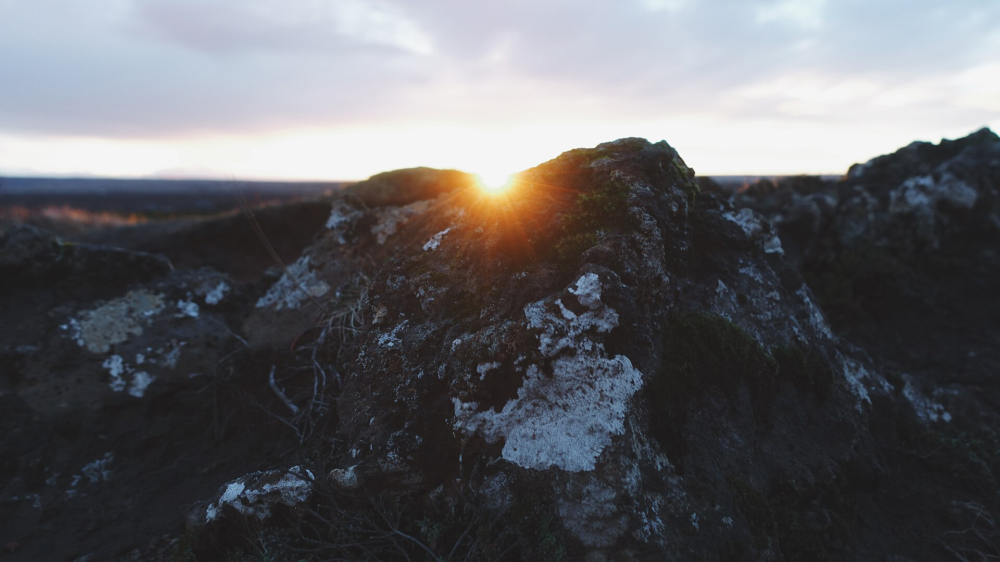
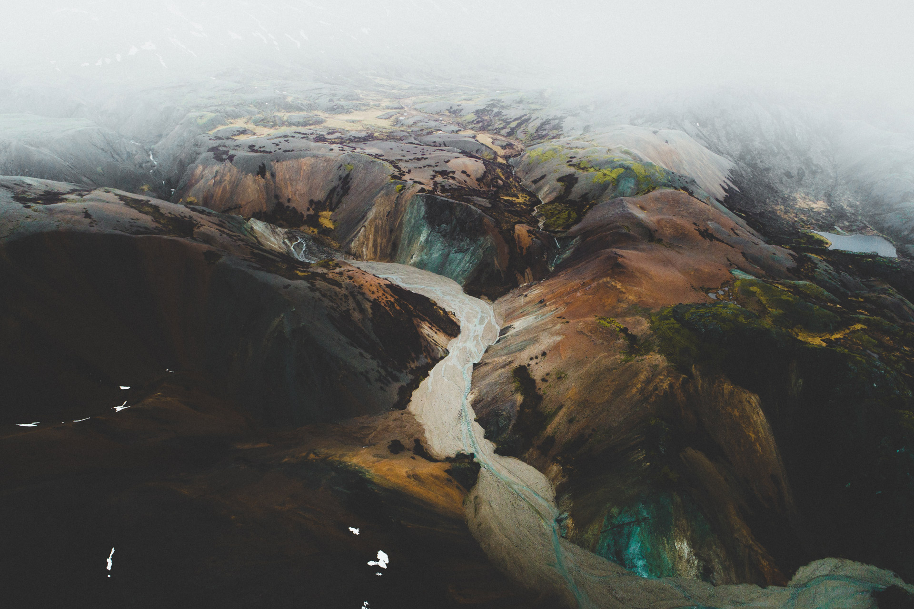
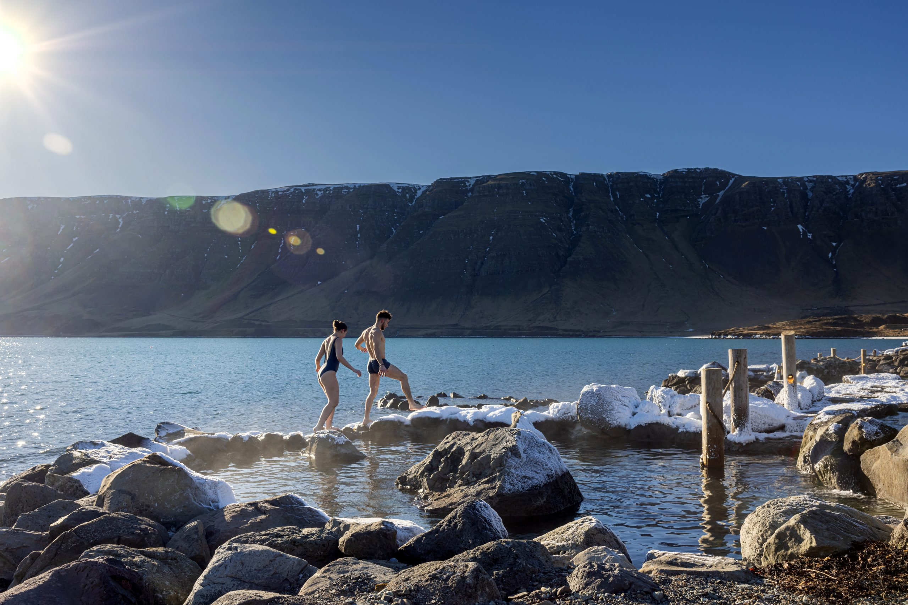
Forty-five minutes up the coast to Hvalfjörður. The road runs under the mountains, the sea is on the left, and the weather is doing whatever April wants it to do.
Eight natural geothermal pools at varying temperatures, set directly along the shoreline of the fjord, backed by mountains and a black beach. Contemporary art installations across the property. This is not a spa. It is hot water running into the North Atlantic in a wild fjord, in April wind, with snow still on the ridges above. Lunch at Stormur, the small bistro on site.
Back to the city. The afternoon is open. Rest, the hotel spa, a slow walk, shopping on Laugavegur, the Reykjavik Art Museum for anyone curious. For the more restless: a two-hour whale-watching RIB from the old harbour, or a gentle ride through a lava field on an Icelandic horse. Hidden Iceland can book either the moment hands go up.
Grandagarður 2, on the Grandi harbour. The building is a 1924 saltfish processing factory, preserved and repurposed. The restaurant is family-run, Michelin Selected, and built on a single idea — cook what old Icelandic cookbooks and manuscripts describe, using wild herbs and foraged ingredients and land-and-sea cooking, the way it was done before the supermarket arrived on the island.
The ten-course tasting menu moves through arctic char, highland lamb, skyr, fermented butter, wild greens. The chef comes out of the kitchen. The room is small enough that the table will feel like a room of its own even at eight. Hidden Iceland has arranged a small moment at dessert — a candle, flowers on the table, a short word from the chef about where the menu comes from. Nothing theatrical. Nothing of the wrong register.
After dinner, a short walk back to the Edition. Upstairs to THE ROOF, the seventh-floor bar with a wraparound view of the ocean and the mountains. Champagne and cake are waiting. The rest of the night is whatever the group decides it is.
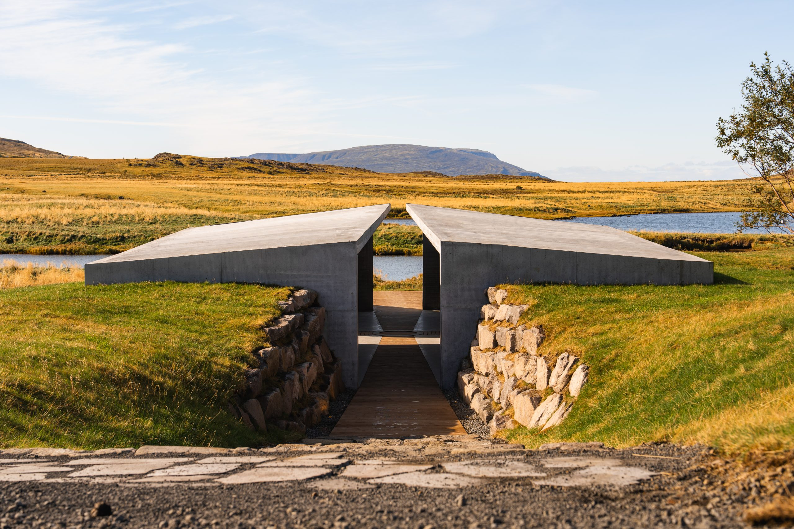
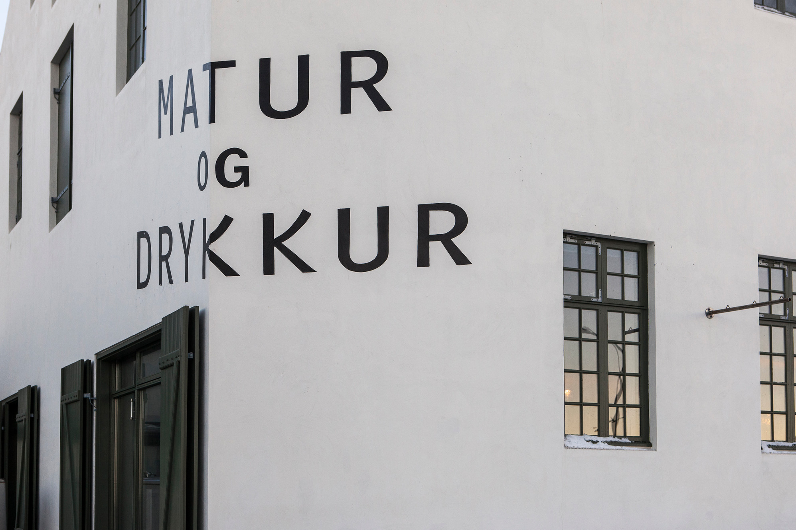
Breakfast at Tides, the ground-floor restaurant at the Edition, where the menu is overseen by Gunnar Gíslason of Dill. No schedule. Some of the group will want one last walk along the harbour or a coffee at Reykjavik Roasters. The rest will want to sit.
Minibus from Hidden Iceland. Forty-five minutes. Done.
The hotel is where you sleep.
The island is why you came.
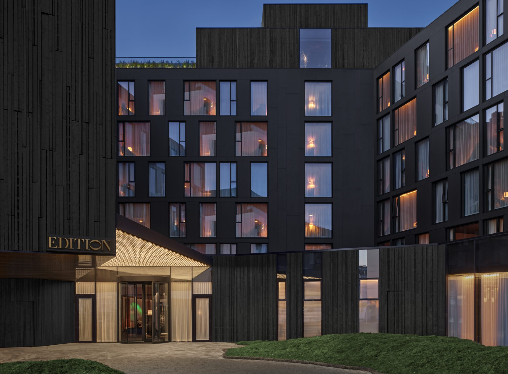
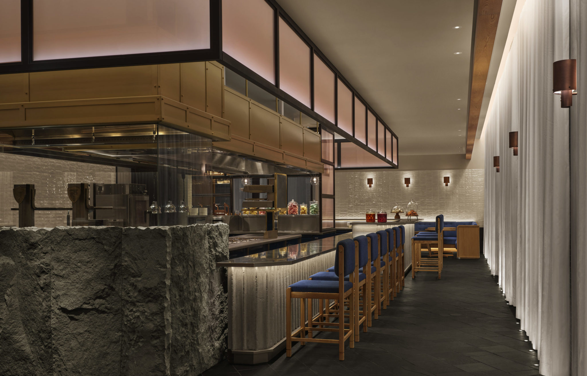
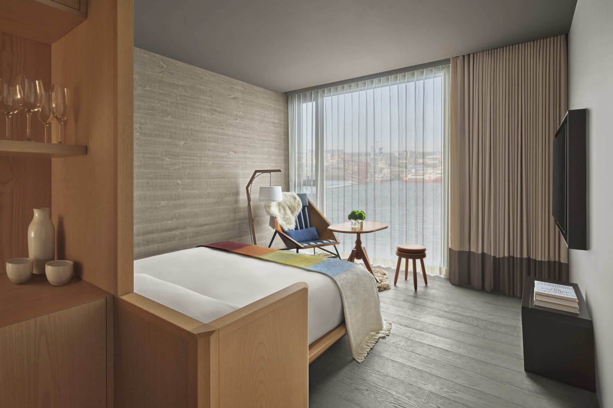
Austurbakki 2, on the harbour, downtown. Ian Schrager's Edition line. A modern five-star hotel that opened in 2021, with four restaurants and bars inside it — including Tides on the ground floor, whose menu is overseen by the chef of Dill, and THE ROOF on the seventh. Four rooms for three nights, suggested split: two Corner Suites and two Deluxe Kings, each with floor-to-ceiling windows over the harbour and the mountains.
The Edition is not the experience. It is the comfortable base the experience runs from. For this group, that is exactly right.
Founder-owned by three co-owners — Dagný Björg Stefánsdóttir, Scott Drummond, and Ryan Connolly. Serandipians Grand DMC Champion Gold 2025 and 2026, which is the European luxury gold standard and one of the hardest credentials to hold on the island. XO Private partner.
One senior travel expert is assigned to the trip and is the single point of contact on WhatsApp from the moment planning starts to the moment the minibus pulls away from Keflavík on Sunday. They coordinate airport transfers, the Golden Circle day, Silfra, Friðheimar, Hvammsvík, all restaurant bookings, the birthday-dinner coordination with Matur og Drykkur, the Sky Lagoon passes, and anything else the group raises on the fly. Weather in Iceland changes hourly in April. The WhatsApp relationship is how that gets handled without any of it touching the group.
All figures in EUR, for eight people across four days and three nights. David covers the full trip.
Working figure is around 48,000 EUR. A leaner version — Deluxe Kings instead of Corner Suites, lighter wine choices, a simpler Saturday afternoon — lands closer to 37,000. A splashier one — the Penthouse, private whale-watching RIB, business flights for everyone — comes in around 56,000. Every number above is a range, not a quote. Hidden Iceland will confirm the exact figures the moment the brief reaches them.
Room rates at the Edition for April will be confirmed with the hotel directly. Hidden Iceland will return exact figures on the full day of private guiding and the local handling package within forty-eight hours of receiving the brief. Silfra is offered year-round but will be confirmed by DIVE.IS for the specific Friday date. Matur og Drykkur opens Thursday to Sunday — Saturday works, but the reservation must be placed six to eight weeks out given the size of the table. Northern lights are possible in very early April but are not planned around; the April daylight is already too long to rely on them. Everything else is real, and booked the moment this goes forward.